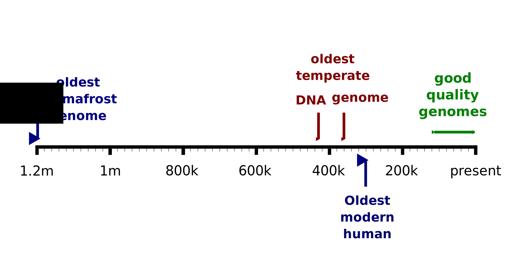
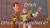
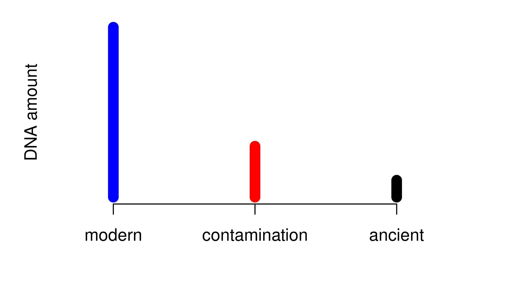
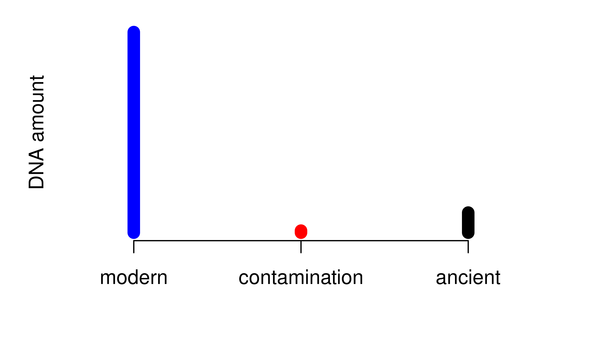
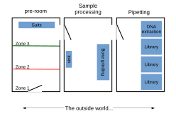

Ancient DNA: methods and solutions
BSX-3139 Molecular Ecology and Evolution
Dr Axel Barlow
email: a.barlow.@bangor.ac.uk
Ancient DNA
- Why study ancient DNA?
- A brief history of the field
- Propoerties of ancient DNA, challenges and solutions
Ancient DNA is just old DNA
- Bones
- Teeth
- Permafrost carcasses/"mummies"
- Museum specimens
- Sediments
- Dental calculus
- Coprolites


Why study ancient DNA?
A brief history
The field is < 40 years old
There have been some spectacular failures
Sorry dinosaur fans...
Sorry dinosaur fans...
First Pleistocene DNA

First Pleistocene DNA
First Pleistocene mitochondrial genome
First palaeogenome
The present
Properties of ancient DNA
Properties of ancient DNA
- Present in trace amounts
- Fragmentation
- High rates of sequencing error
- Contamination
These are temporal processes

Timeline of ancient DNA

Ancient DNA is present in trace amounts
Trace amounts
- Ancient samples typically contain very small quantities of DNA
- Lab methods optimised for low DNA input
- Sensitive to contamination by modern DNA

The ratio is key

The ratio is key

PCR lab is especially dangerous

Ancient DNA lab (clean lab)
- Geographically separated from modern lab
- Strict decontamination procedures (bleach, UV)
- Protective clothing
- Control of flow people and materials into lab (avoiding modern)
- Separated work areas for different procedures
Smurfs

Example lab layout

DNA extraction

Ancient DNA is highly fragmented
Ancient DNA fragment length distribution
- DNA in ancient samples is highly fragmented
- The fragment lengths have a skewed distribution

45 ka cave bear (Ursus kudarensis)
DNA extraction
PCR issues

Not a problem for NGS

Ancient DNA data has high error rates
Typical ancient DNA molecule

Cytosine deamination

Ancient DNA sequencing error
- Cytosine deamination
- Polymerase errors
- Other things we don't fully understand yet
All these are sequenced with high quality, and amplified by the typically low coverage of ancient DNA data
Error correction

Ancient DNA is highly contaminated
First measurement of endogenous content
Contamination
- Around 1% endogenous content is considered typical
- Not really a problem for PCR (except humans)
- THE major problem for NGS
Several methods exist for reducing the contaminant fraction
DNA hybridisation capture*

*Of course this only works if you know the sequence in advance
Sample pretreatment

Just sequence it (if you can afford it)

Selecting the right sample

.svg) Anatomography CC BY-SA 2.1 JP
Anatomography CC BY-SA 2.1 JP

Selecting the right sample

Suggested reading
Next time:
Ancient DNA 2